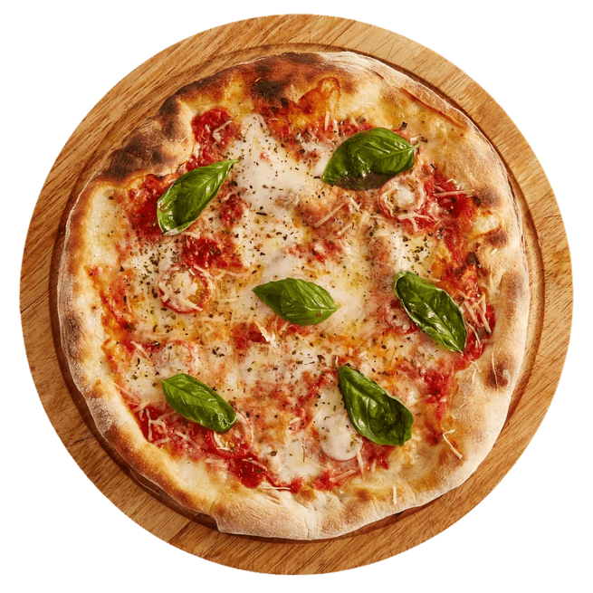
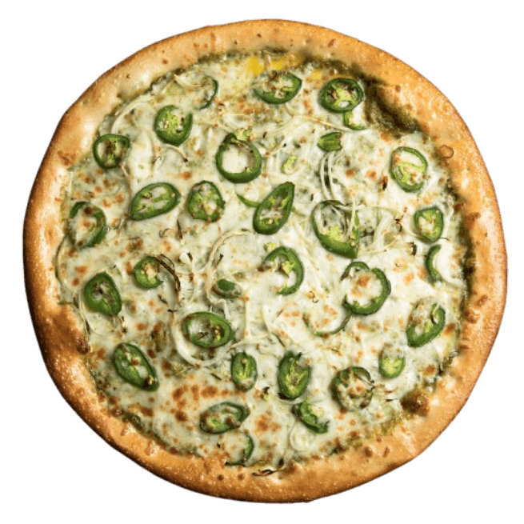
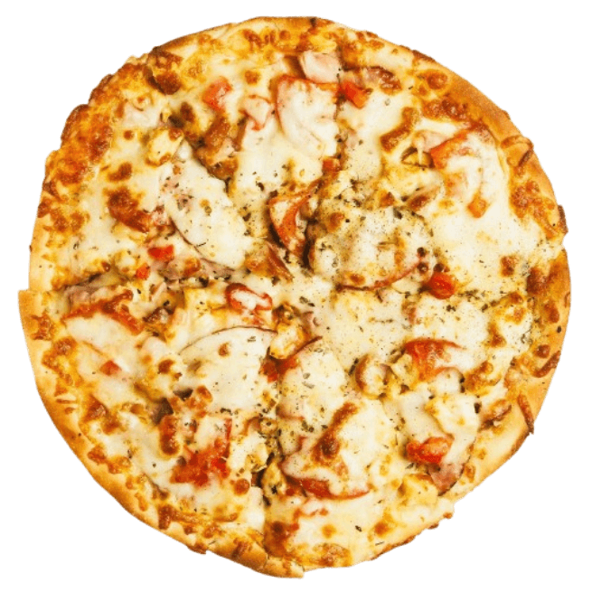

Cardápio

Pizza De Margueritta
Uma pizza deliciosa e refrescante
R$39.99

Pizza De Pimentão
Pizza com um ardor encantador
R$45.99

Pizza De Camarão
Sabor de furtos do mar incomparável
R$69.99
Sobre a nossa História
Com o tempo, a qualidade das receitas e o atendimento fizeram a fama da pizzaria crescer. O que era apenas um hobby acabou se tornando um dos lugares favoritos da cidade para reunir amigos e família.
Hoje, a Pizzaria do Zé continua mantendo a mesma proposta do início: ingredientes de qualidade, massa artesanal e um ambiente acolhedor para todos os clientes. Cada pizza é preparada com dedicação para garantir sabor e tradição em cada fatia. 🍕